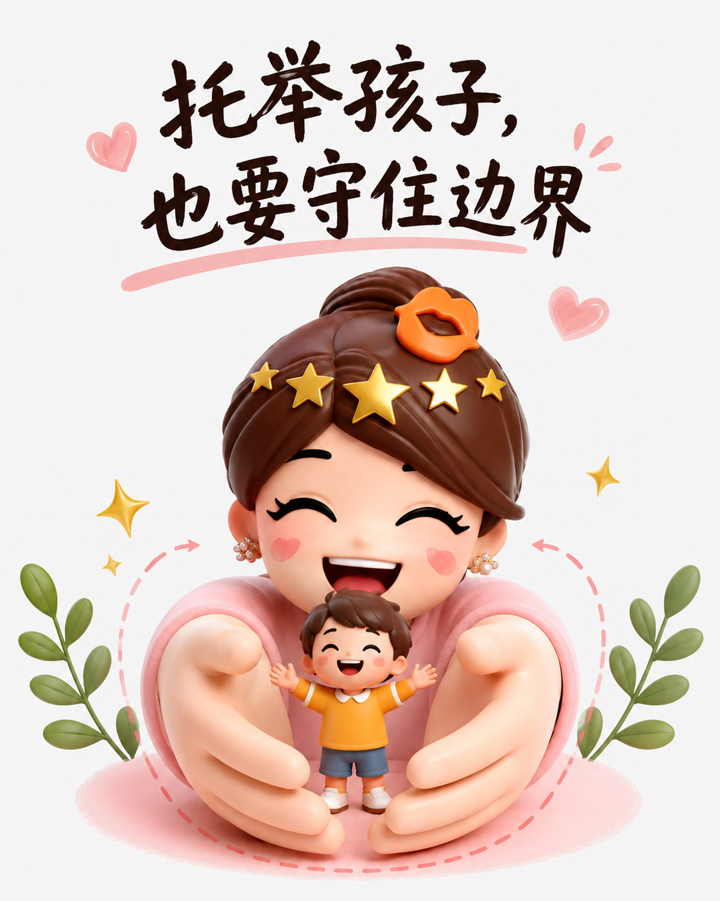
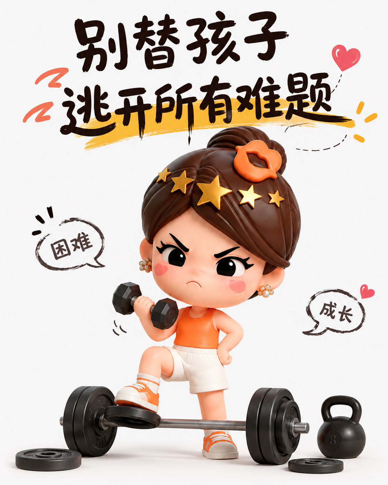
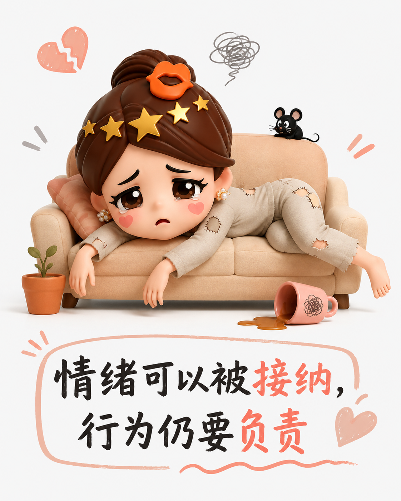

给孩子自由，也给成长设边界
尊重，不是把所有决定权都交出去，而是让孩子在清晰边界里学会选择、承担与体谅。
一、先分清：感受可以被看见，要求不必都实现
很多家庭把“尊重”理解成不干预、少拒绝，结果孩子只学会了用情绪争取让步。更稳妥的做法是先接住感受，再说明规则：你可以不高兴，但不能因此取消已经约定的责任。

二、把选择权放在合适的位置
兴趣、穿着和做事节奏，可以让孩子参与决定；出勤、基本习惯和对错边界，则需要大人守住。选择意味着承担后果，父母若总替孩子收拾残局，孩子就很难长出真正的独立。
三、别把每一道难题都替他搬走
作业拖延、冲突和失败，都是练习自我管理的入口。父母可以提供方法和陪伴，却不必替孩子逃避困难。该拒绝时拒绝，该执行时执行，让行为产生可感知的结果，规则才不只是口号。

四、温柔不是没有立场
孩子会烦躁、顶嘴，也会失控。允许他说出委屈，不等于允许伤害别人；理解他的情绪，也不等于撤销规则。当理解与边界同时存在，孩子才会知道：我的感受很重要，但世界不会永远按我的要求运转。

给孩子空间，是为了让他练习选择；守住底线，是为了让他学会负责。爱提供安全感，规则提供方向，两者缺一不可。